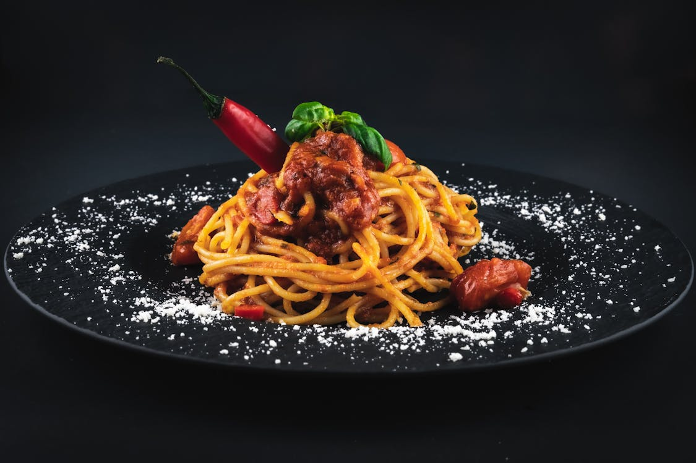

Odin Recipes
- Spaghetti

Spaghetti is a classic Italian pasta dish known for its delicious combination of tender noodles and rich, savory sauce. It is a versatile meal that can be made with a variety of ingredients, from simple marinara sauce to hearty meat-based ragù. Traditionally, spaghetti is served with a tomato-based sauce, infused with garlic, herbs, and sometimes ground meat or vegetables.
This dish is loved worldwide for its comforting taste and easy preparation. Whether topped with Parmesan cheese, fresh basil, or a drizzle of olive oil, spaghetti is a timeless favorite for all ages.
A salad is a refreshing and healthy dish made with a mix of fresh vegetables,
fruits, proteins, and dressings. It can be served as a side dish or a main course, offering a balance of flavors and textures. Popular ingredients include lettuce, tomatoes, cucumbers, carrots, and cheese, often drizzled with olive oil, vinegar, or creamy dressings.
Salads are loved for their light, nutritious, and customizable nature, making them a perfect choice for any meal! ü•ó‚ú®
Spaghetti
.jpeg)
Spaghetti is a classic Italian pasta dish known for its delicious combination of tender noodles and rich, savory sauce. It is a versatile meal that can be made with a variety of ingredients, from simple marinara sauce to hearty meat-based ragù. Traditionally, spaghetti is served with a tomato-based sauce, infused with garlic, herbs, and sometimes ground meat or vegetables.
This dish is loved worldwide for its comforting taste and easy preparation. Whether topped with Parmesan cheese, fresh basil, or a drizzle of olive oil, spaghetti is a timeless favorite for all ages.